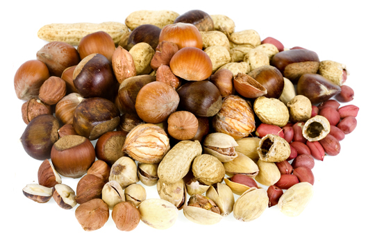

Organic food is produced by farmers who emphasize the use of renewable resources and the conservation of soil and water to enhance environmental quality for future generations. Organic meat, poultry, eggs, and dairy products come from animals that are given no antibiotics or growth hormones. Organic food is produced without using most conventional pesticides; fertilizers made with synthetic ingredients or sewage sludge; bioengineering; or ionizing radiation. Before a product can be labeled "organic," a Government-approved certifier inspects the farm where the food is grown to make sure the farmer is following all the rules necessary to meet USDA organic standards. Companies that handle or process organic food before it gets to your local supermarket or restaurant must be certified, too.
Nuts and seeds are ideal snacks. They provide vitamins, minerals and quick energy without unhealthy fat or empty calories. Although the nutmeat or seed is protected by a shell or fruit, unless they are raised organically they are treated with synthetic chemicals just as other non-organic crops. Look for the USDA organic seal on nut and seed packages.
One of our core values has been to cultivate strong relationships with the best organic farmers in the world. Every year, we purchase an increasing amount of our nuts, seeds, and dried fruit directly from the farms, some of which we have worked with for over a decade. Our level of knowledge and communication with our farmers allows us to preserve our organic integrity and ensure fair business practices throughout the supply chain.
Our walnuts are locally grown and farmer-direct, certified organic by CCOF. They add versatility in the kitchen as a snack or ingredient. Delicious in salads and better in desserts. Our organic walnuts are an excellent source of omega-3 essential fatty acids. This means that you can count on enjoying healthy, high-quality walnuts in every bite you take. Product of USA.